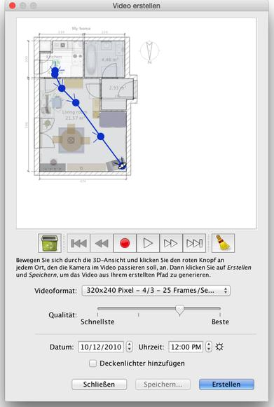

| Videos erstellen | |||
Um einen 3D-Video von ihrer Wohnung zu erstellen, wählen Sie den Menüeintrag 3D-Ansicht > Video erstellen... oder klicken Sie das Video erstellen-Werkzeug an.
Dadurch wird ein Dialogfenster angezeigt, das demjenigen zur Erstellung von Fotos ähnelt.  Oben in diesem Bereich ist ein Plan Ihrer Wohnung angezeigt, auf dem der virtueller
Pfad der Videokamera gezeichnet wird. Die Schaltflächen zur Aufnahme, Wiedergabe und
zum Löschen unter dem Plan dienen dazu, die Punkte aufzunehmen, an denen die Kamera
vorbeikommen soll, den aufgenommenen Pfad abzuspielen beziehungsweise einzelne
Punkte des Pfads zu entfernen. Um einen Video zu erstellen, wählen Sie die Anfangsposition der Videokamera in der
3D-Ansicht des Sweet Home 3D-Hauptfensters. Klicken Sie dann auf die Schaltfläche mit dem roten Punkt im
Videoerstellungsdialog. Bewegen Sie sich dann in der 3D-Ansicht zum nächsten Standort
der Videokamera und klicken Sie erneut die Schaltfläche mit dem roten Punkt an. Wiederholen
Sie diese Schritte für jede Position, an der die Kamera im Verlauf des Videos vorbeikommen sollte. |
|